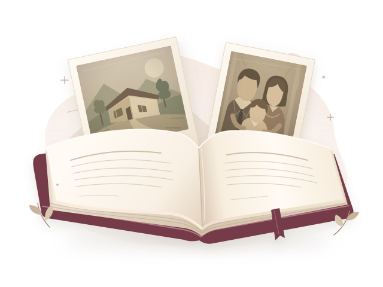

우리의 이야기는, 계속됩니다.✧
당신의 삶, 그 자체로 소중한 이야기
기억은 이야기가 되고,
이야기는 책이 됩니다.
사진 한 장, 마음속 기억 하나.
편안하게 들려주시면 한 권의 자서전으로 엮어드려요.
잘 말하려 애쓰지 않아도 괜찮아요.

한 장의 기억이한 권의 선물이 되도록.
차곡차곡 쌓이는 기억
최근 나눈 이야기
오늘의 작은 질문“어린 시절,
어린 시절,
가장 좋아했던
장소는 어디였나요?
골목길도, 할머니 댁 마루도 좋아요.
떠오르는 그곳부터 시작해 볼까요.
모든 삶에는, 오래 간직할 이야기가 있습니다.
기억을 따라, 천천히
이야기를 들려주세요
잘 말하려 애쓰지 않아도 괜찮아요.
어린 시절질문을 확인해 주세요
첫 번째 이야기
어린 시절, 가장 기억에 남는 동네 풍경은 어떤 모습인가요?
떠오르는 모습부터 들려주세요.
질문을 확인한 뒤 시작해 주세요.
UI 미리보기 · 실제 녹음 없음
라디오 조명과 화면 전환을 살펴보는 시안입니다. 실제 낭독과 음성 수집은 연결하지 않았습니다.
내 삶의 소중한 조각들
나의 기록
함께 나눈 이야기를 한 장씩 펼쳐보세요.
자서전 보기
나의 자서전
모아둔 얇은 책을 펼쳐 나의 이야기를 읽어보세요.
나답게 엮는 한 권
어떤 느낌으로 담을까요?
마음에 드는 문체를 골라보세요. 같은 기억도 새로운 글이 됩니다.
- 기록 선택
- 2문체 선택
- 3초안 살펴보기
한 권의 시작
나의 자서전 초안
읽어보며 마음에 닿는 문장으로 다듬어 보세요.
- 기록 선택
- 문체 선택
- 3초안 살펴보기
책장을 넘기며 만나는 나
나의 작은 자서전
글자 크기
1–2 / 8쪽
한 장 한 장, 그 시절의 나에게 안부를 전합니다.